Flashcraft Events · UX case study
A Kendrick Lamar seat at Coca-Cola Arena and an unlimited-rides theme-park pass have almost nothing in common at the moment of purchase. Flashcraft now sells both through the same six screens — and buyers get there in half the time they used to.
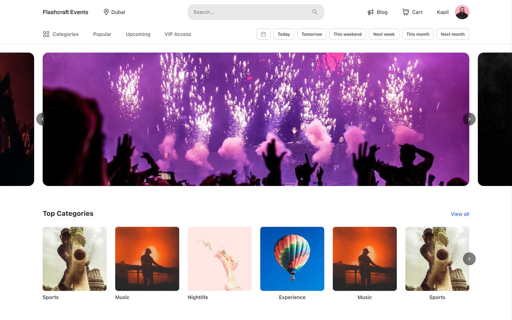
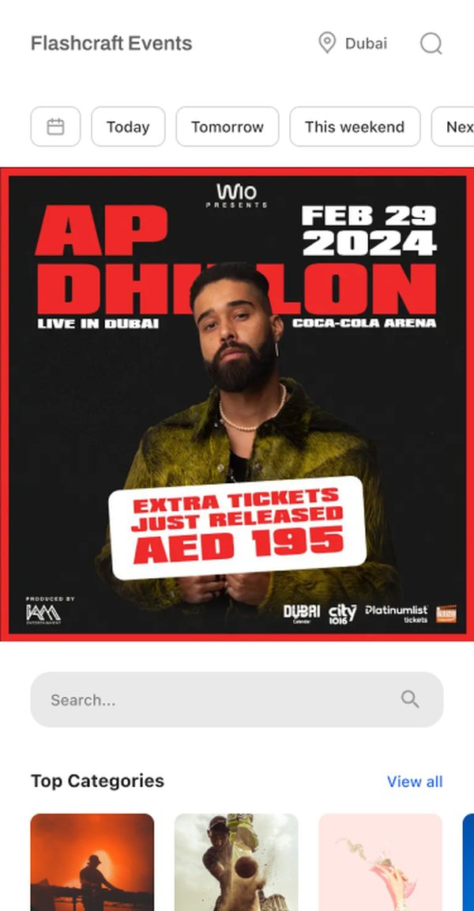
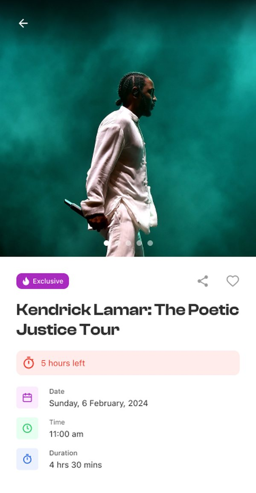
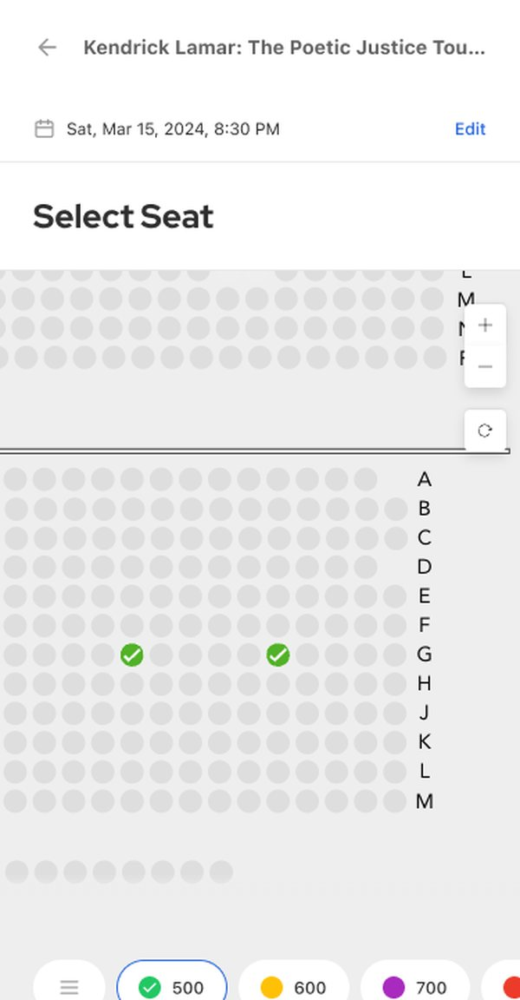
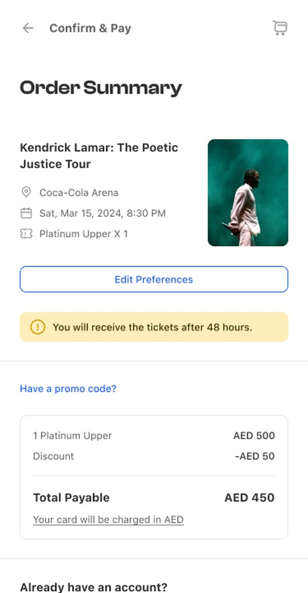
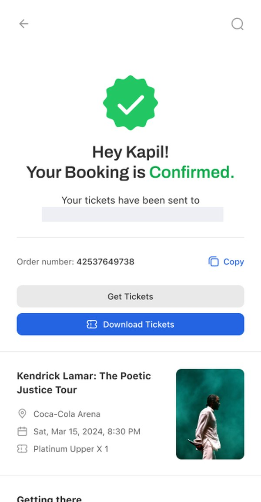
Flashcraft Events is a UAE events-and-attractions ticketing platform. Its catalogue runs from arena concerts and the Dubai World Cup to nightlife and theme-park day passes — inventory that behaves completely differently at the point of sale, and that used to be sold in completely different ways.
I led the redesign end to end: research, information architecture, interaction design, the visual language, and the design system that carries it across phone and desktop. The core of the work was structural — identifying that the catalogue collapses into seven booking archetypes, then designing one purchase flow flexible enough to serve all of them and disciplined enough to ask each buyer only the questions their ticket actually requires.
Three months after launch, mobile checkout completion was up 18%, median time from opening an event to paying fell from 4:52 to 2:38, and support contacts asking where a ticket had gone dropped 41%. The architecture also paid off internally: launching a new inventory type became a content exercise rather than a design-and-build project.
A ticket is not one thing. The word covers a reserved seat at a fixed time, an open-dated theme-park pass, a timed entry slot and a multi-day wristband. Each asks the buyer a different set of questions — and each was answering them somewhere else.
Concerts went through a seating flow. Attractions went through a quantity flow. Theme parks went through a third path built around ticket tiers. A buyer who booked a concert on Friday and a water park on Saturday met two unrelated interfaces, learned nothing transferable, and hit a different checkout at the end of each.
The design problem wasn't “how do we sell a ticket.” It was: what is the smallest set of questions that can sell any ticket — and how do we ask only the ones this ticket needs?
We started with a question the business could not answer internally: at what exact moment do people give up on buying a ticket, and why? Four methods, run over six weeks, converged on the same answer from different directions.
1. People shop by date, not by category. Eleven of eighteen participants described planning an evening before they described planning an outing. They knew they were free on Thursday; they did not know whether they wanted music or comedy. Every competitor we audited led with genre.
“I don't wake up wanting a concert. I know I've got Thursday free and I want to know what's on.” P4 · Dubai resident
2. Price comparison was manual and expensive. Watching participants attempt a flexible-date booking was the most damaging session of the study. Fourteen of eighteen opened multiple tabs or repeatedly navigated back to compare the same event across dates, because price only appeared after a date was committed. Four gave up mid-task.
3. The single largest support theme was delivery, not payment. Of 412 tickets, 63% were some version of “I paid, where is my ticket?” Almost none were payment failures. The product was setting no expectation at all about when a ticket would arrive, and buyers filled the silence by contacting support — usually within twenty minutes of paying.
4. Forced registration was a hard stop for visitors. Seven of eighteen described abandoning a competitor specifically over an account wall. Among the six short-stay visitors it was five of six.
“I'm here for four days. I'm not making an account for one ticket.” P11 · Visitor, three-day stay
The interviews resolved into four recurring profiles. Each one drove a specific decision rather than sitting decoratively in a deck.
| Profile | What they need | What it changed |
|---|---|---|
| The resident planner | Something to do on a specific evening, nearby, at a known price. | Date filters — Today, Tomorrow, This weekend, Next week, custom range — sit above the fold on both platforms, ahead of every category. |
| The visiting tourist | Book an attraction for a fixed travel window without creating an account. | Guest checkout became the default path; login is an optional panel. Currency and language switching moved into the account layer. |
| The fan | Follow an artist, get in early, sit somewhere good. | Artist pages and rails, Earlybird and VIP tiers, Exclusive badging, and Notify Me capture on events that haven't gone on sale. |
| The family group | Price a day out for a variable number of people and find the saving. | Theme-park tickets use side-by-side comparison cards with the saving stated on the card — no seat map, and a guest stepper instead. |
Delivery timing had been treated as an operations detail, invisible to design. Once 63% of support volume traced back to it, it became a first-class object in the interface: promised before payment, restated after, and reflected in three distinct confirmation screens depending on how that ticket actually reaches the buyer.
The catalogue looked like dozens of special cases. The breakthrough was realising it isn't — it's three variables, and every product the business sells is a combination of them.
Working with operations, I catalogued every product type against three questions: is the date fixed, open or chosen? are there time slots? is there assigned seating, or a ticket tier? The catalogue collapsed into seven combinations — and seven is a number you can design for.
| Archetype | Date | Time slot | Seat map | Ticket tier |
|---|---|---|---|---|
| Single day, single slot | Fixed | — | ✓ | — |
| Single day, multiple slots | Fixed | ✓ | ✓ | — |
| Multiple days, single slot | ✓ | — | ✓ | — |
| Multiple days, multiple slots | ✓ | ✓ | ✓ | — |
| Any day, single time slot | Open | ✓ | — | — |
| Theme parks | Open | — | — | ✓ |
| Theme parks with time slots | Open | ✓ | — | ✓ |
Every archetype ends on the same checkout and the same confirmation. That is the architectural bet of the whole project: the questions differ, the transaction doesn't.
I started with the reserved-seat concert — the path with the most decisions in it. Date, then time slot, then seating area, then an individual seat, then guests, then pay. Solving the most demanding case first meant every simpler archetype could be produced by removing steps rather than inventing new ones, which is what kept seven flows from becoming seven interfaces.
Two rounds, nine participants each. Three changes came directly out of them.
Desktop was not a stretched phone. The extra width had to earn its place: the order summary sits beside the checkout form rather than above it, the seat map shows a whole venue without zooming, and theme-park tiers sit side by side so the comparison is direct instead of a horizontal scroll. Everything else — the date-first filters, the archetype logic, the status language — carried over unchanged, because it was structural rather than cosmetic.
The visual language had one job: make price, availability and urgency readable at a glance, on a phone, in daylight, without the interface shouting. Events photography is loud by nature — the system around it had to be quiet, and the colour had to mean something.
Rather than a generic brand ramp, I built the colour system from the place the product sells. Each family is named for something a buyer in Dubai can see out of the window, and each was chosen to carry a specific job in the interface — so the palette is also the status language.
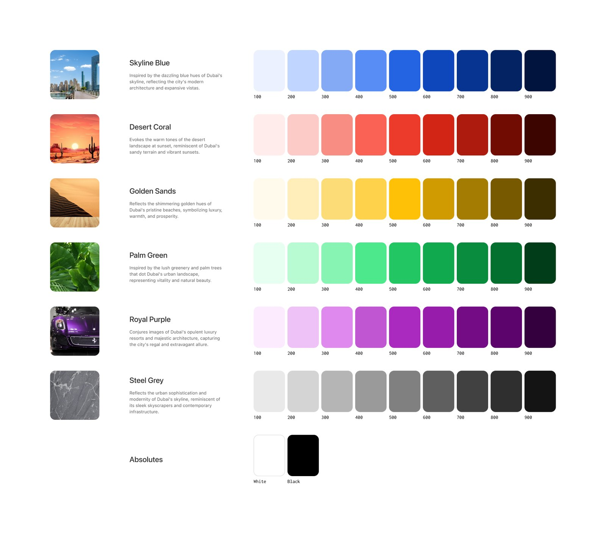
Each family ships with a photographic reference and a written rationale, so the next designer inherits the reasoning and not just the hex values.
SF Pro throughout, in a deliberately short ramp. Headlines are set tight and heavy so a two-line event title holds its own against a full-bleed photograph; body copy stays at a comfortable reading weight; prices and dates use tabular figures so numbers line up down a list of time slots and never jitter as availability updates.
Event imagery carries the emotion, so everything else recedes: white surfaces, hairline rules, a single accent for action, and no decorative colour anywhere. Cards use a consistent image ratio and a fixed information order — category, title, date, price — so a buyer scanning a rail reads the same four things in the same place every time, regardless of what the photograph is doing.
1. Price lives on the date, not at the end. Every day in the date rail carries its own price chip, colour-coded by band, with sold-out days marked in coral. The same logic runs into the time-slot list and the full calendar. This is the direct answer to the fourteen participants who were opening tabs to compare dates — it turns three steps into one glance.
2. The seat map behaves like a map. Real venue geometry — stage line, lettered rows, blocks split by aisles — with explicit zoom and reset controls rather than undiscoverable pinch gestures. Price bands sit as pills along the bottom; selected seats read as green ticks; the running total and ticket count stay pinned in a sticky footer.
3. The flow asks only what this ticket needs. A concert asks date → slot → area → seat. A theme park asks date → slot → tier, where tier is a set of comparison cards with the saving stated on the card. No greyed-out steps, no invisible skips — each path is short and each path is honest.
4. Checkout removes the two classic abandonment triggers. Guest checkout is the default and login is optional; the breakdown itemises the discount and states Your card will be charged in AED before the buyer reaches the card field. Field microcopy does the rest: Same as your ID pre-empts the venue's entry check, We will send you tickets here explains why email is mandatory.
5. The post-purchase moment is designed, not assumed. Confirmation gives a copyable order number, ticket download, the booking summary and a Getting there map — plus one of three variants depending on how that ticket actually arrives. This is the screen that took 41% off support volume.

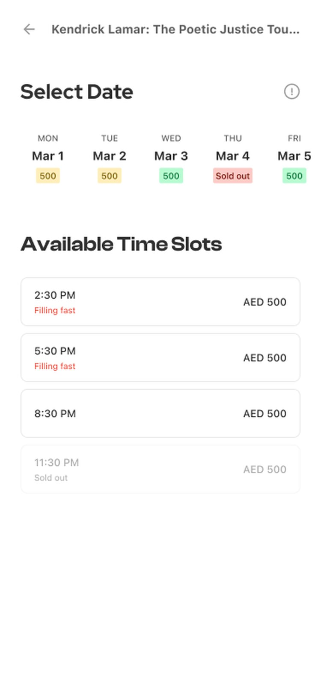
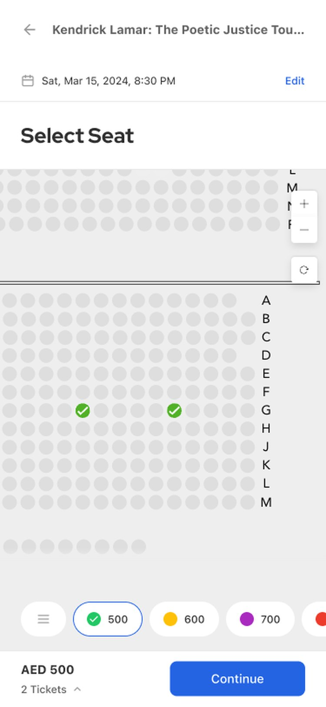
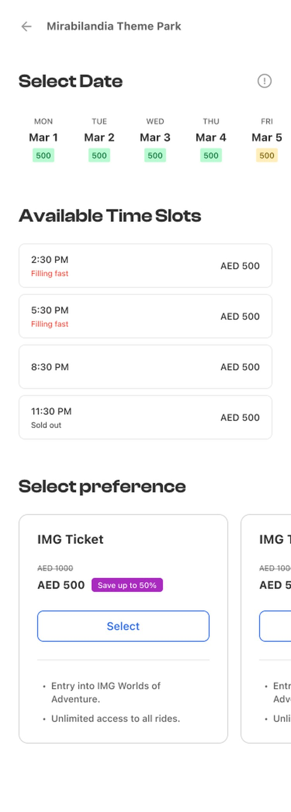
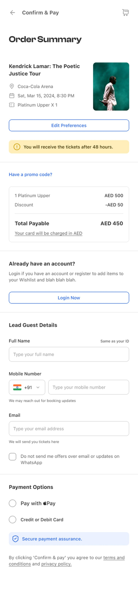
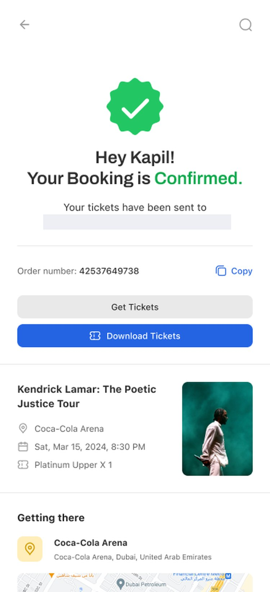
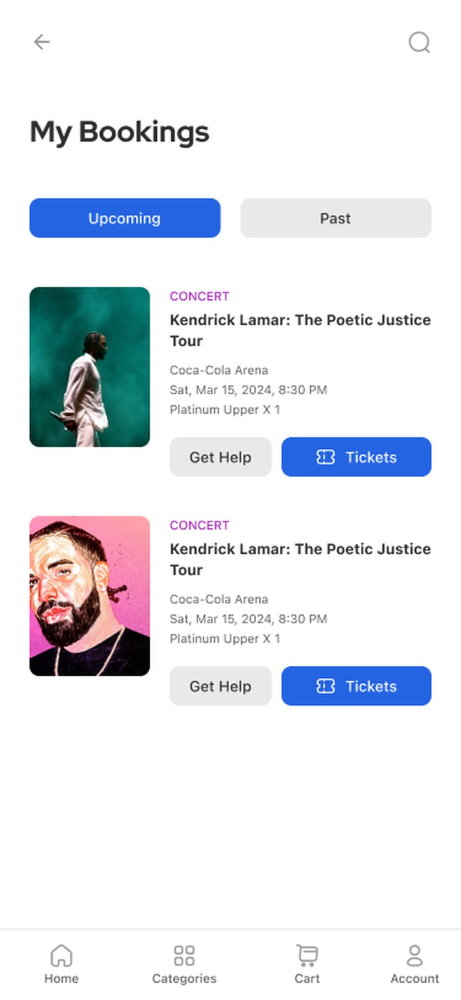
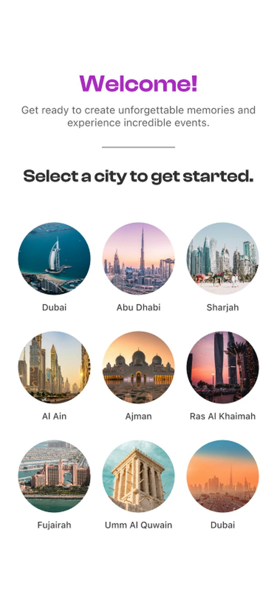
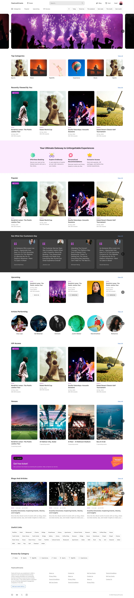
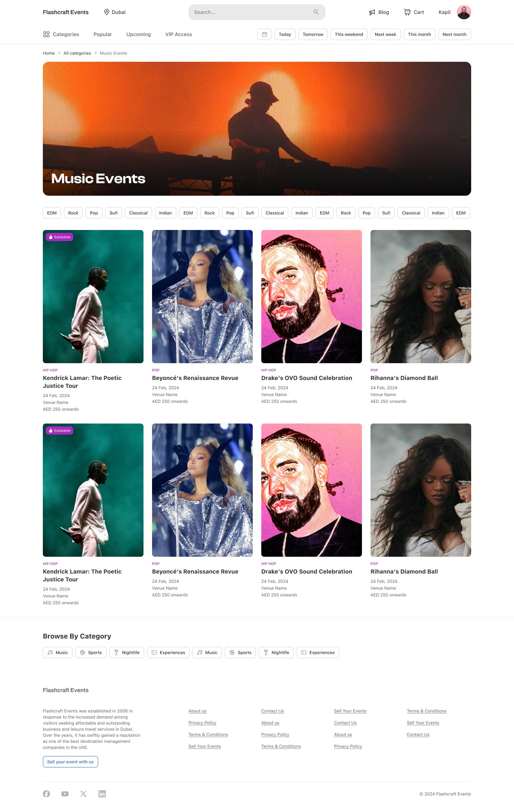
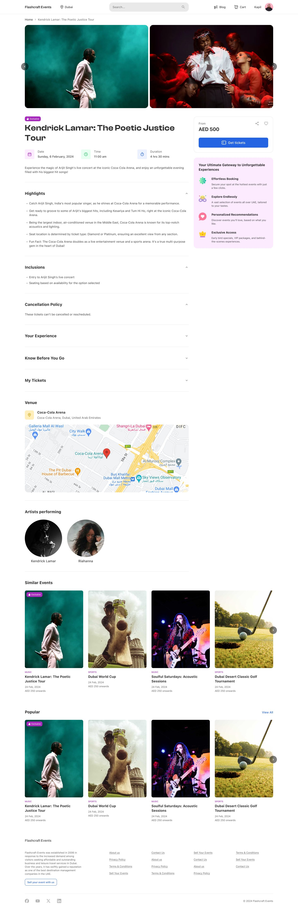
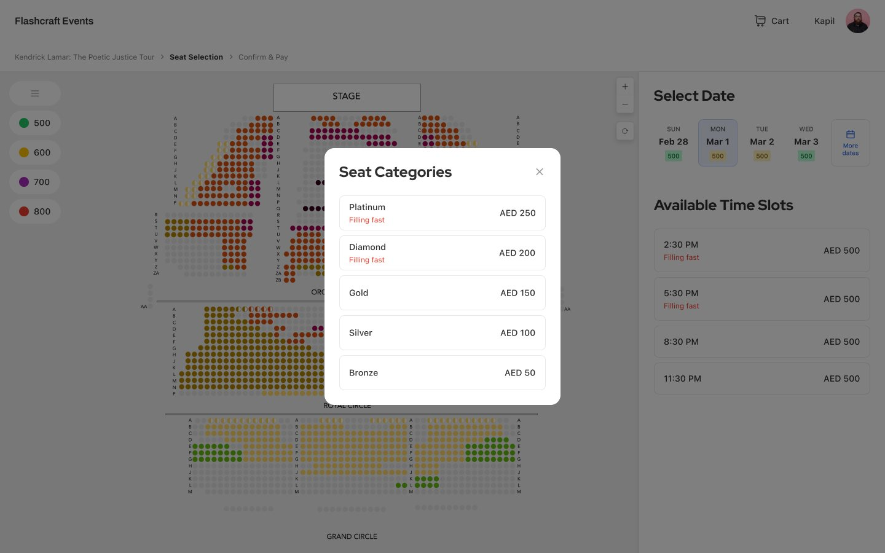
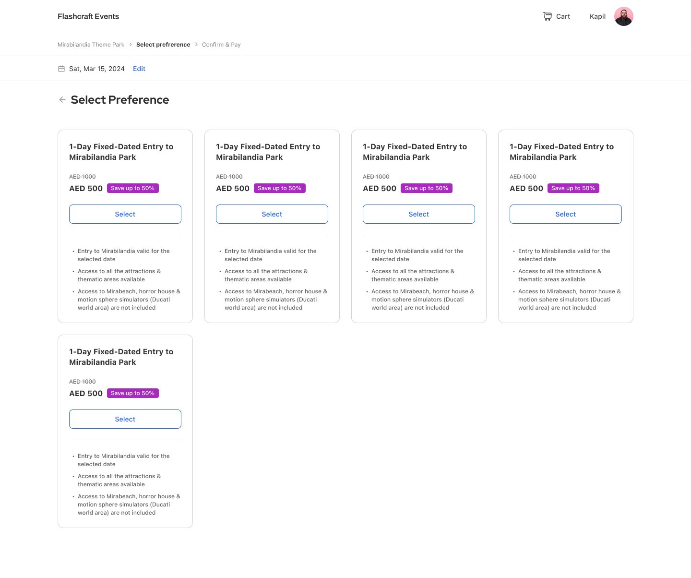
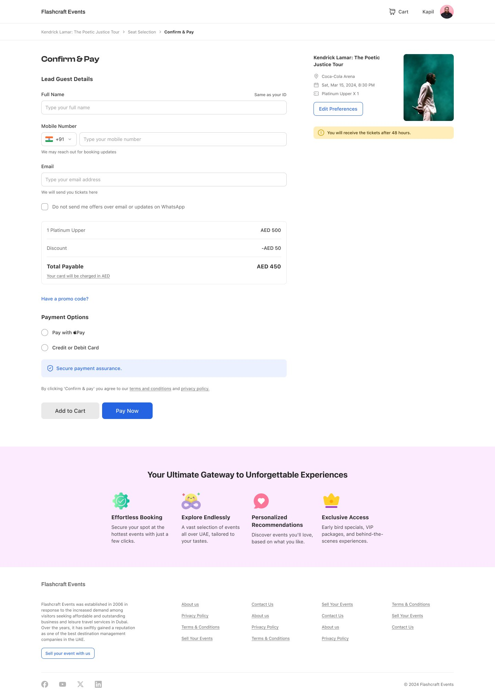
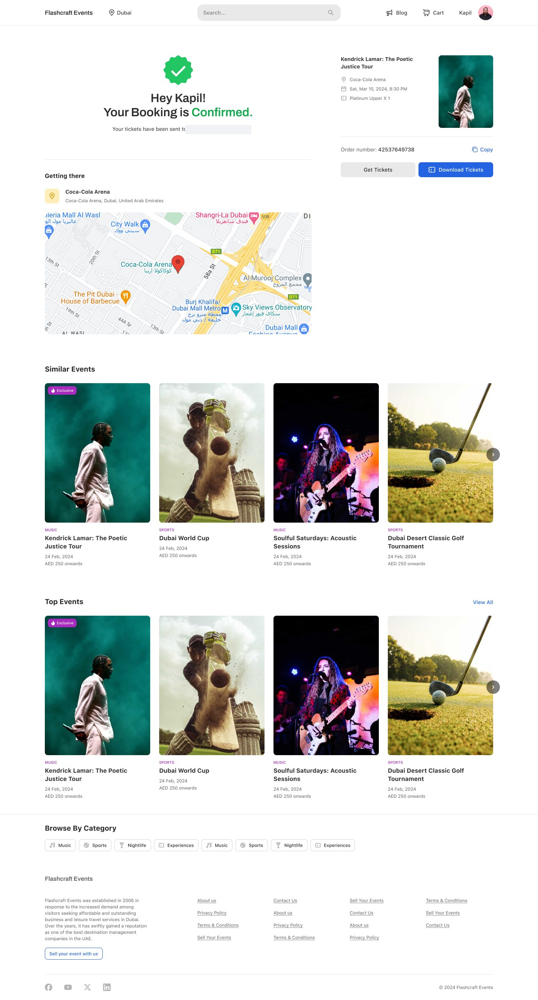
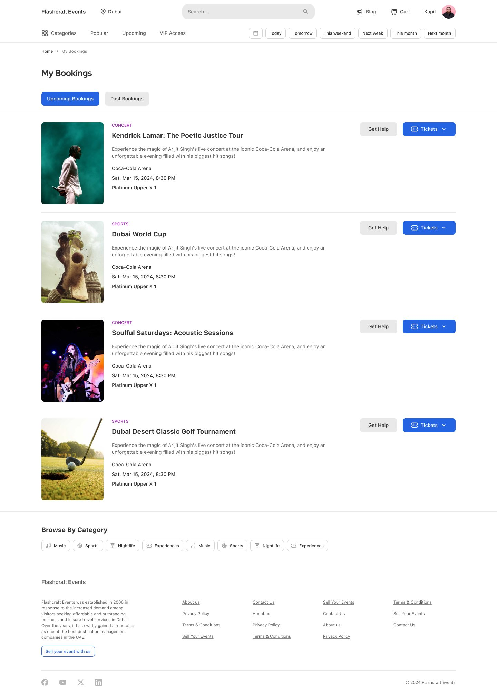
Measured three months after launch, against the same ninety-day window the original research covered.
The result the business cared most about wasn't on that list. Because every archetype resolves to the same checkout, adding a new inventory type stopped being a design project. The first category launched after handover shipped without a single new screen.
Error states need to say more than “this is wrong”
Invalid fields at checkout currently tint red without explaining what failed or how to fix it. A buyer whose valid-looking email was rejected has no route forward. Each field needs a specific message, a summary at the top of the form, and focus moved to the first invalid input.
Some states still lean on colour alone
Price bands on the date rail and the seat legend are distinguishable by hue before anything else. The chips already carry the number; the legend needs a label or pattern so nothing depends on colour vision or on screen brightness outdoors.
No Arabic or right-to-left layout yet
Language switching exists, but RTL does not — and in the UAE that is not optional. It also isn't a translation task: the back arrow, the date rail direction, the seat-map orientation and the price-column alignment all mirror. This is the top item on the roadmap.
The tablet range is unclaimed
Phone and desktop are both resolved; everything between them currently falls back to a stretched mobile layout. Most of the components needed to close that gap already exist as desktop side panels.
The lesson I took into the next project: when a catalogue looks like endless special cases, the special cases are usually a symptom. Find the variables underneath and the interface gets smaller, not bigger.